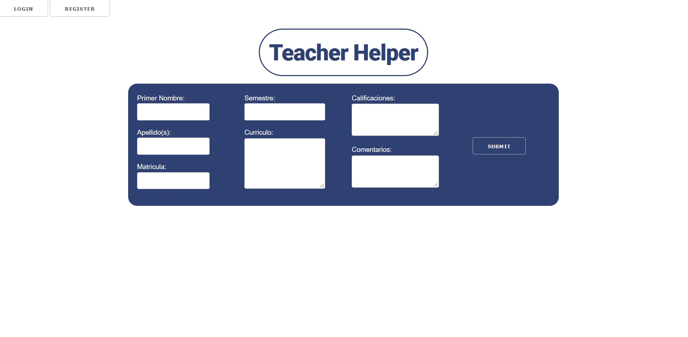
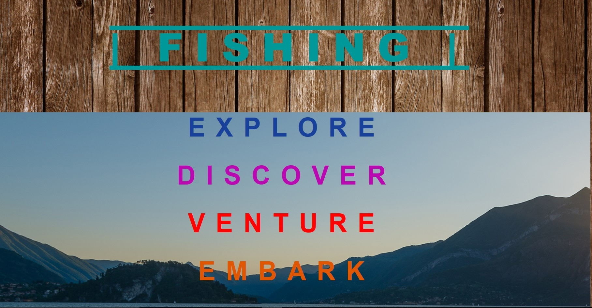
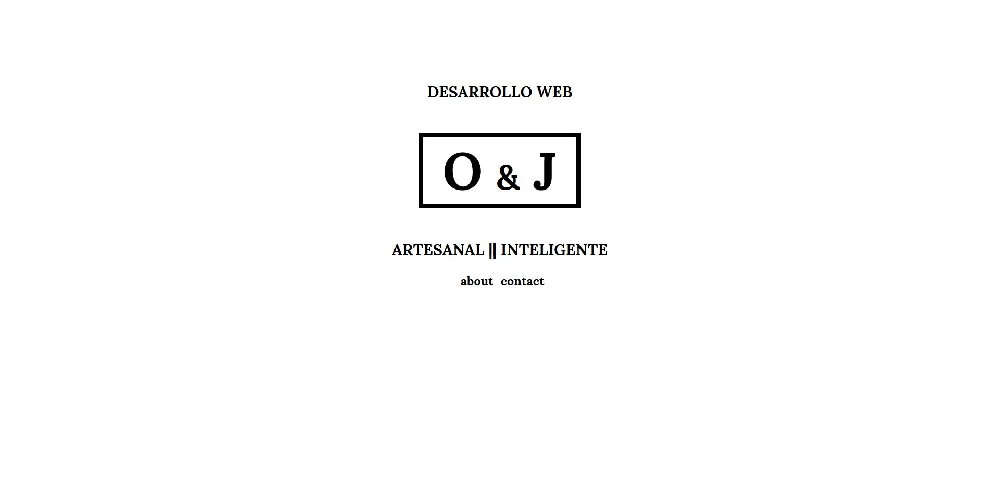
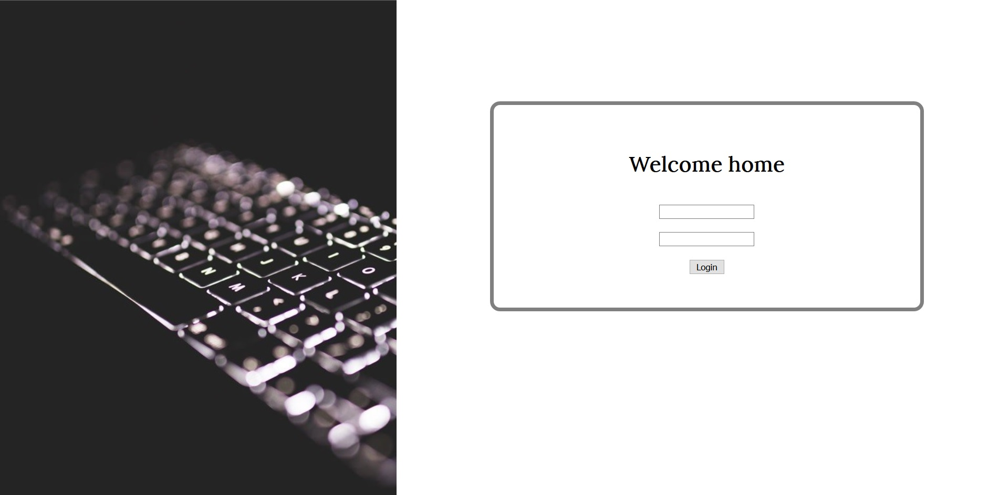
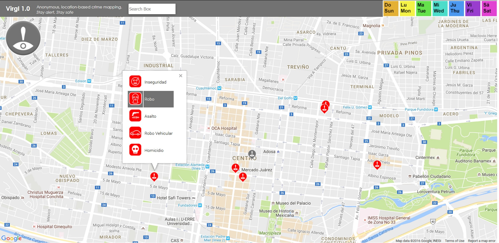
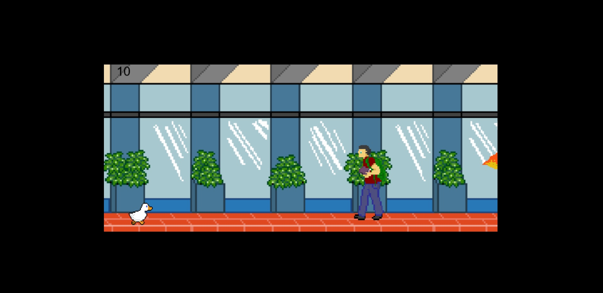

Hello, friend, and welcome to my site. I am Jesus Alatorre, a software engineer in training. Born (9/11/1995) and raised in sunny Monterrey, Mexico, where I currently study. I love coding, coffee, dogs, home-cooked meals, science fiction, gadgetry, and teamwork. I consider myself calm, collected, and generally quiet, but not at all shy.
I believe engineering is all about the observation of the natural world, and using our understanding of it to develop tools for the benefit of humanity. Hence, I believe the computer is the pinnacle of all human engineering, the most advanced tool we possess, and our most powerful ally. To make advances in the field of computation is to push forward the human race itself. I aspire to someday be a part of this driving force, to work among peers that I can learn from and can, in turn, learn from me.
I've done a bunch of mockups. A bunch of them.
   None of them are functional apps or online sites, just my beginnings into web development. I've had the opportunity to work with some amazing individuals closely, with whom I've grown a ton and worked on most of these. Luckily, they don't live too far away, so some of our work together can be featured here as part of what I've helped build.
An example of an ongoing project we've got is Virgl (pronounced "Virgil"). It is an app that lets users anonymously report crime by marking its incidence on the map. Slowly but steadily, this'll generate a criminal tendency map on which criminal occurrences can be observed and even color coded.
I also had the opportunity to work on a little browser game for a school project. The concept was simple: an infinite scroller, platform-type game. And it was duck-themed too. We built it with phaser.js, and it was a fun experience all around. This would be my first-ever application of any knowledge of javascript. My particular role in this work was handling the different screens' (like 'Game Over', and 'Start'), getting all the resources to pop in seamlessly, and making sure they would leave when needed.
I am currently coursing my 3rd semester at the Instituto Tecnologico de Monterrey, Campus Monterrey (Monterrey Institute of Technology).
Here, I am studying Ingenieria en Tecnologias Computacionales (Computer Tech. Engineering), a career with a heavy focus on software engineering. Mainly, I use C++ for my classes, and it is thus the language I am most proficient in. You can see my Github repositories on C++ Fundamentals and Object-Oriented C++, these contain several exercises, homeworks, and projects I did, and serve as a clear outline of what I studied throughout those courses. You can also see what I've been up to in my current programming course, C++ Data Structures